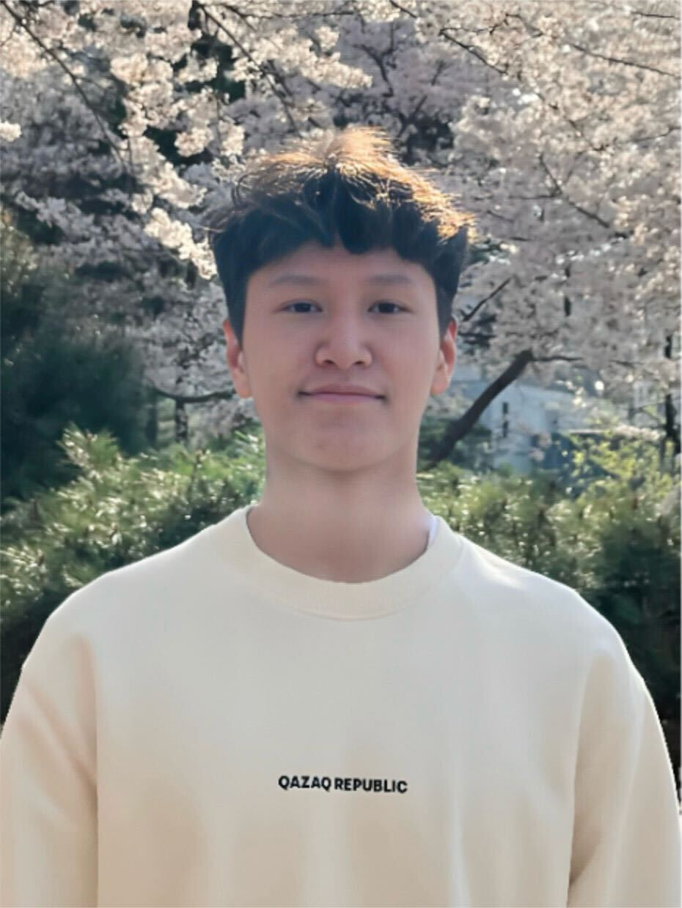
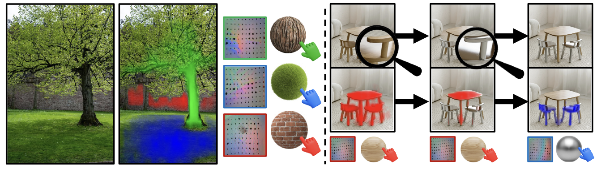
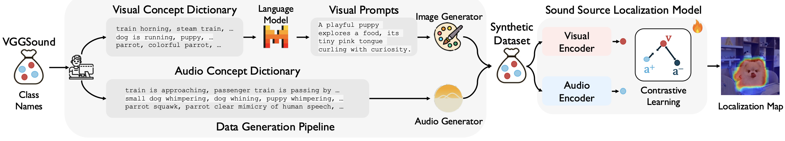

Multisensory Intelligence Lab
We are a research group at UNIST (Ulsan National Institute of Science and Technology), led by Prof. Arda Senocak. Our work spans the intersection of perception, representation, and learning across multiple sensory modalities.
We develop machine learning models that perceive and reason about the world through multiple senses — as humans do. Our research encompasses multimodal learning with the goal of building AI systems that are grounded in rich, diverse streams of real-world signals.
People
See all →Arda Senocak
Principal Investigator
Yewon Kim
PhD Student

Assanali Salem
Undergraduate Intern
Is That You?
Join Us!
Join MILab
We are actively looking for motivated PhD/MS students and Undergraduate interns passionate about multimodal learning and sensory AI. If you are interested, please send your CV and a brief research statement to ardasnck@unist.ac.kr.
Contact Prof. SenocakNews
See all →MILab has been awarded a 3-year research grant from the National Research Foundation of Korea (NRF) under the Outstanding Young Scientist Grant (우수신진연구).
Three main conference papers are accepted to CVPR 2026.
Prof. Senocak is selected as an Outstanding Reviewer at ICCV 2025.
Papers are accepted to NeurIPS 2025 and IJCV 2025.
Publications
See all →* Equal Contribution · † Corresponding Author

Seeing Through Touch: Tactile-Driven Visual Localization of Material Regions
CVPR 2026

How Far Can We Go With Synthetic Data for Audio-Visual Sound Source Localization?
CVPR 2026